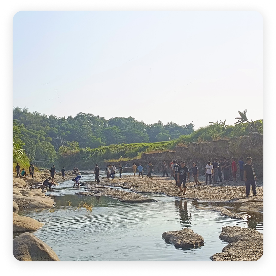
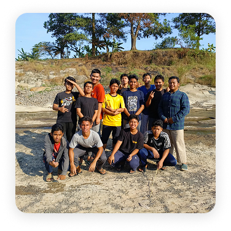
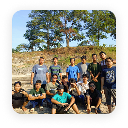

IDN Bersyukur

Tujuan Program IDN Bersyukur
Kegiatan dalam IDN Bersyukur


Makna dan Manfaat Program
Melalui IDN Bersyukur, santri belajar bahwa:
- Syukur bukan sekadar ucapan “Alhamdulillah,” tetapi juga tindakan nyata dalam beribadah dan berbuat baik.
- Hidup menjadi lebih bermakna ketika dijalani dengan kesadaran dan keikhlasan.
- Keberhasilan sejati datang dari hati yang tenang dan selalu bersyukur atas setiap ketetapan Allah.
Penutup
Program IDN Bersyukur adalah wujud nyata dari misi IDN Boarding School untuk mendidik santri berakhlak mulia, berilmu luas, dan berhati lembut.
Melalui kegiatan ini, para santri tidak hanya belajar ilmu dunia, tetapi juga belajar memahami makna hidup dengan cara yang spiritual dan menyentuh hati.
Dengan bersyukur, santri IDN diingatkan bahwa nikmat terbesar bukanlah harta atau kedudukan, tetapi kesempatan untuk terus dekat kepada Allah dan menjadi pribadi yang bermanfaat bagi umat.
Ayo Daftarkan Sekarang Juga!
Daftar Santri Baru